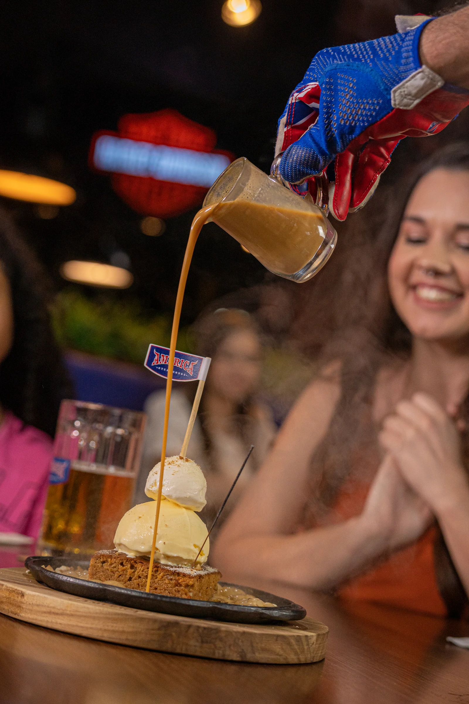

America Steak House
2024–2025
A energia da casa em uma nova presença digital. Fotografia e design para dar unidade à experiência da marca.
- Projeto
- Reposicionamento nas redes sociais, design e imagem
- Cliente
- America Steak House
- Ano
- 2024–2025
- Categorias
- Fotografia
Audiovisual
Design - Atuação
- Design, fotografia e produção audiovisual
Uma identidade, novas possibilidades
O trabalho para a America Steak House parte de uma identidade visual já existente e amplia suas possibilidades nas redes sociais. Novos conceitos gráficos, referências à cultura americana e uma hierarquia mais clara organizam a comunicação de produtos, eventos e experiências.
Mostrar o que se vive à mesa
A fotografia e a produção audiovisual aproximam a comunicação da experiência no restaurante. Na seleção apresentada, as fotos destacam pratos, gestos e momentos de convivência, enquanto as peças de design integram esse repertório à linguagem da marca.